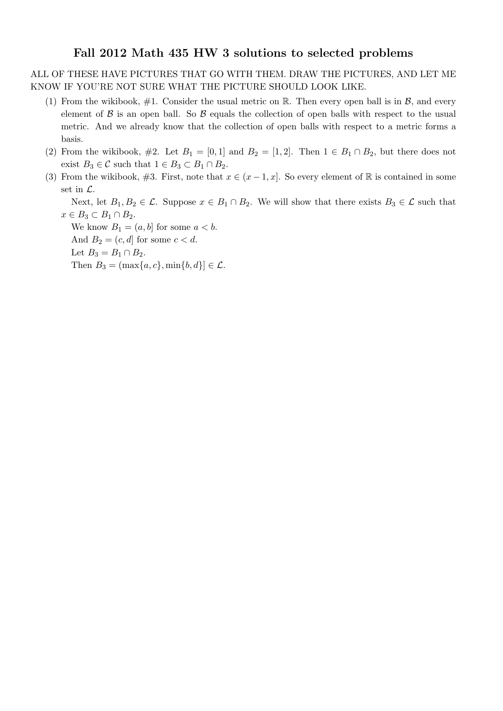

MATH 5690 (Topology) · Chapter 2 Homework
Problems first; ALL solutions together at the end. The comps problem is quoted verbatim from the CSULA topology comprehensive exam (solution by Claude - comps have no key). The assigned main-textbook problems are inlined verbatim (cropped from Morris, Topology Without Tears); official solutions are appended.
For: Quiz 2 (Mon Sep 28) · all quiz dates
Problems
Assigned problems (Chapter 2)
$\bullet$ Fall 2012 topology comps, Problem 5.
$\bullet$ Main textbook: Section 2.1 #3, 5, 7; Section 2.2 #1, 2, 5; Section 2.3 #1, 2.
$\bullet$ Wikibook: #1, 2, 3, 5.
Comprehensive-exam problem (Fall 2012, #5) - verbatim
For any polynomial function $f:\mathbb{R}^2\to\mathbb{R}$, put $U_f:=\{(x,y)\in\mathbb{R}^2: f(x,y)\neq 0\}$. Prove that the collection $\{U_f: f:\mathbb{R}^2\to\mathbb{R}$ is a polynomial$\}$ forms a basis for a topology on $\mathbb{R}^2$.
Wikibook problems (Wikibooks: Topology/Bases) - verbatim
$\bullet$ #1. Show that $\mathcal{B}=\{(a,b)\mid a,b\in\mathbb{R},\ a<b\}$ is a base for a topology on $\mathbb{R}$ and that this topology is the usual one.
$\bullet$ #2. Show that $\mathcal{C}=\{[a,b]\mid a<b\}$ is not a base for any topology on $\mathbb{R}$ (identify which base axiom fails).
$\bullet$ #3. Show that $\mathcal{L}=\{(a,b]\mid a<b\}$ is a base for a topology on $\mathbb{R}$. Compare this topology to the lower limit topology.
$\bullet$ #5. (Comparing topologies.) Let $\mathcal{T}$ be the standard topology on $\mathbb{R}$, $\mathcal{T}_\ell$ the lower limit topology, and $\mathcal{T}_K$ the $K$-topology. Show that $\mathcal{T}_\ell$ and $\mathcal{T}_K$ are each strictly finer than $\mathcal{T}$, but are not comparable to each other.
Additional problems (class) - verbatim
(1) Let $U$ be the open unit disc in $\mathbb{R}^2$, that is, the set $\{(x,y)\mid x^2+y^2<1\}$. Is $U$ open in the Zariski topology? Is it closed? Prove that your answer is correct.
(2) Let $C$ be the closed unit disc in $\mathbb{R}^2$, that is, the set $\{(x,y)\mid x^2+y^2<1\}$. Is $C$ open in the Zariski topology? Is it closed? Prove that your answer is correct.
(3) Let $S$ be the unit circle in $\mathbb{R}^2$, that is, the set $\{(x,y)\mid x^2+y^2=1\}$. Is $S$ open in the Zariski topology? Is it closed? Prove that your answer is correct.
(4) Let $K$ be the set $Z(y-x^2)$ in $\mathbb{R}^2$, that is, the set $\{(x,y)\mid y-x^2=0\}$. Prove that in the Zariski topology, $K$ is an irreducible closed set.
(5) Prove that $\mathbb{R}^2$ is irreducible in the Zariski topology, that is, that it does not equal the union of two proper closed subsets.
(6) Use your answers from (4) and (5) to prove that the Krull dimension of $\mathbb{R}^2$ in the Zariski topology is at least 2.
(7) Find all closed irreducible subsets of $\mathbb{R}$ in the Euclidean topology.
(8) Let $X$ be a set in the indiscrete topology. Find the Krull dimension of $X$, and prove that your answer is correct.
(9) Recall that the cobounded topology on $\mathbb{R}$ consists of all sets whose complements are bounded, together with the empty set. Find the Krull dimension of $\mathbb{R}$ in this topology.
(10) Generalize your answer from (9) to topologies defined by bornologies. Be wary of one special case.
MAIN-TEXTBOOK PROBLEMS (Morris, Topology Without Tears - assigned exercises, verbatim)
Exercises 2.1
$\bullet$ #3. Show, by example, that the union of an infinite number of closed subsets of $\mathbb{R}$ is not necessarily a closed subset of $\mathbb{R}$.
$\bullet$ #5. If $F$ is a non-empty finite subset of $\mathbb{R}$, show that $F$ is closed in $\mathbb{R}$ but that $F$ is not open in $\mathbb{R}$.
$\bullet$ #7.
(i) Let $S = \{0, 1, 1/2, 1/3, 1/4, 1/5, \ldots, 1/n, \ldots\}$. Prove that the set $S$ is closed in the euclidean topology on $\mathbb{R}$.
(ii) Is the set $T = \{1, 1/2, 1/3, 1/4, 1/5, \ldots, 1/n, \ldots\}$ closed in $\mathbb{R}$?
(iii) Is the set $\{\sqrt{2}, 2\sqrt{2}, 3\sqrt{2}, \ldots, n\sqrt{2}, \ldots\}$ closed in $\mathbb{R}$?
Exercises 2.2
$\bullet$ #1. In this exercise you will prove that disc $\{\langle x, y\rangle : x^2 + y^2 < 1\}$ is an open subset of $\mathbb{R}^2$, and then that every open disc in the plane is an open set.
(i) Let $\langle a, b\rangle$ be any point in the disc $D = \{\langle x, y\rangle : x^2 + y^2 < 1\}$. Put $r = \sqrt{a^2 + b^2}$. Let $R_{\langle a,b\rangle}$ be the open rectangle with vertices at the points $\langle a \pm \frac{1-r}{8}, b \pm \frac{1-r}{8}\rangle$. Verify that $R_{\langle a,b\rangle} \subset D$.
(ii) Using (i) show that $D = \bigcup_{\langle a,b\rangle\in D} R_{\langle a,b\rangle}$.
(iii) Deduce from (ii) that $D$ is an open set in $\mathbb{R}^2$.
(iv) Show that every disc $\{\langle x, y\rangle : (x - a)^2 + (y - b)^2 < c^2, a, b, c \in \mathbb{R}\}$ is open in $\mathbb{R}^2$.
$\bullet$ #2. In this exercise you will show that the collection of all open discs in $\mathbb{R}^2$ is a basis for a topology on $\mathbb{R}^2$. [Later we shall see that this is the euclidean topology.]
(i) Let $D_1$ and $D_2$ be any open discs in $\mathbb{R}^2$ with $D_1 \cap D_2 \neq \emptyset$. If $\langle a, b\rangle$ is any point in $D_1 \cap D_2$, show that there exists an open disc $D_{\langle a,b\rangle}$ with centre $\langle a, b\rangle$ such that $D_{\langle a,b\rangle} \subset D_1 \cap D_2$. [Hint: draw a picture and use a method similar to that of Exercise 1 (i).]
(ii) Show that $D_1 \cap D_2 = \bigcup_{\langle a,b\rangle\in D_1\cap D_2} D_{\langle a,b\rangle}$.
(iii) Using (ii) and Proposition 2.2.8, prove that the collection of all open discs in $\mathbb{R}^2$ is a basis for a topology on $\mathbb{R}^2$.
$\bullet$ #5. Prove the following statements.
(i) Let $m$ and $c$ be real numbers. Then the line $L = \{\langle x, y\rangle : y = mx + c\}$ is a closed subset of $\mathbb{R}^2$.
(ii) Let $\mathbb{S}^1$ be the unit circle given by $\mathbb{S}^1 = \{\langle x, y\rangle \in \mathbb{R}^2 : x^2 + y^2 = 1\}$. Then $\mathbb{S}^1$ is a closed subset of $\mathbb{R}^2$.
(iii) Let $\mathbb{S}^n$ be the unit $n$-sphere given by $\mathbb{S}^n = \{\langle x_1, x_2, \ldots, x_n, x_{n+1}\rangle \in \mathbb{R}^{n+1} : x_1^2 + x_2^2 + \cdots + x_{n+1}^2 = 1\}$. Then $\mathbb{S}^n$ is a closed subset of $\mathbb{R}^{n+1}$.
(iv) Let $B^n$ be the closed unit $n$-ball given by $B^n = \{\langle x_1, x_2, \ldots, x_n\rangle \in \mathbb{R}^n : x_1^2 + x_2^2 + \cdots + x_n^2 \leq 1\}$. Then $B^n$ is a closed subset of $\mathbb{R}^n$.
(v) The curve $C = \{\langle x, y\rangle \in \mathbb{R}^2 : xy = 1\}$ is a closed subset of $\mathbb{R}^2$.
Exercises 2.3
$\bullet$ #1. Determine whether or not each of the following collections is a basis for the euclidean topology on $\mathbb{R}^2$ :
(i) the collection of all "open" squares with sides parallel to the axes;
(ii) the collection of all "open" discs;
(iii) the collection of all "open" squares;
(iv) the collection of all "open" rectangles;
(v) the collection of all "open" triangles.
$\bullet$ #2.
(i) Let $\mathcal{B}$ be a basis for a topology $\tau$ on a non-empty set $X$. If $\mathcal{B}_1$ is a collection of subsets of $X$ such that $\tau \supseteq \mathcal{B}_1 \supseteq \mathcal{B}$, prove that $\mathcal{B}_1$ is also a basis for $\tau$.
(ii) Deduce from (i) that there exist an uncountable number of distinct bases for the euclidean topology on $\mathbb{R}$.
Chapter 2: additional problem Krebs added after 10/5 (verbatim from his homework doc)
Let $T$ be the collection of all sets $Z(G_1,\ldots G_n)^c$ for some subsets $G_1,\ldots G_n$ of $X$ such that for all $i=1,\ldots n$ we have that either $G_i$ is finite or $G_i = X$.
(a) Prove that $T$ is a topology on $X^n$.
(b) Prove that in this topology, if $X$ is an infinite set, then $X^n$ has Krull dimension $n$.
Solutions
My worked solutions to the comprehensive-exam problem (and any class problem with no official key) follow; the instructor's official solutions to the main-textbook / worksheet problems are appended after.
Comps Fall 2012 #5 - solution
A collection $\mathcal{B}$ of subsets of a set $S$ is a basis if (i) every point of $S$ lies in some member of $\mathcal{B}$, and
(ii) if $p\in B_1\cap B_2$ with $B_1,B_2\in\mathcal{B}$, then some $B_3\in\mathcal{B}$ has $p\in B_3\subseteq B_1\cap B_2$.
(i) Covering: the constant polynomial $f\equiv 1$ is a polynomial with $U_f=\{(x,y): 1\neq 0\}=\mathbb{R}^2$. So every point of $\mathbb{R}^2$ lies in a member of the collection.
(ii) Intersections: for polynomials $f,g$, the product $fg$ is a polynomial, and $(fg)(p)\neq 0 \Leftrightarrow f(p)\neq 0$ and $g(p)\neq 0$ (a field has no zero divisors). Hence $U_f\cap U_g=\{p: f(p)\neq 0$ and $g(p)\neq 0\}=U_{fg}$, itself a member of the collection. So for any $p\in U_f\cap U_g$ we may take $B_3=U_{fg}$, giving $p\in U_{fg}\subseteq U_f\cap U_g$. Both axioms hold, so the collection is a basis for a topology on $\mathbb{R}^2$ (the resulting open sets are the complements of common zero-sets of families of polynomials - the Zariski topology on $\mathbb{R}^2$). ∎

Chapter 2: backup solutions (Claude, not official)
Covered by the official files and not repeated here: Section 2.1 #3, #5, #7 (ch2_sec21_22.pdf); Section 2.2 #1, #2, #5(i) to (iii); Section 2.3 #1, #2 (same file, Section 2.3 given as a sketch); Wikibook #1, #2 and the "is a base" half of #3 (ch2_wikibook.pdf). The official 2.2 #5(iv) is garbled (the rectangle's vertices are cut off) and 2.2 #5(v) takes "the minimum distance r" to the curve without showing r > 0, so those two parts are redone below. Small errata in the official file: in 2.2 #1(iv) the rectangle should be centred at (m, n), not (a + m, b + n); in 2.2 #5(i) the restriction m ≠ 0 is unnecessary and the distance needs an absolute value, d = |b − am − c| / √(1 + m²).
Conventions. As in Morris, the euclidean topology on ℝn has as a basis the open rectangles (a1, b1) × ⋯ × (an, bn). For p ∈ ℝn, ‖p‖ = √(p12 + ⋯ + pn2). For δ > 0 let C(p, δ) = ∏(pi − δ, pi + δ), an open rectangle containing p; every q ∈ C(p, δ) has ‖q − p‖2 < nδ2, i.e. ‖q − p‖ < √n·δ.
(iv) Let Bn be the closed unit n-ball given by Bn = {⟨x1, x2, . . . , xn⟩ ∈ ℝn : x12 + x22 + ⋯ + xn2 ⩽ 1}. Then Bn is a closed subset of ℝn.
We show T = ℝn \ Bn = {p : ‖p‖ > 1} is open. Let p ∈ T and put r = ‖p‖ − 1 > 0, δ = r/√n. Let q ∈ C(p, δ). Then ‖q − p‖ < √n·δ = r, and by the triangle inequality ‖q‖ ≥ ‖p‖ − ‖q − p‖ > ‖p‖ − r = 1. So q ∈ T. Thus p ∈ C(p, δ) ⊆ T with C(p, δ) an open rectangle. Hence T is a union of open rectangles, so T is open (Proposition 2.3.3) and Bn is closed. ∎
Let T = ℝ2 \ C and ⟨a, b⟩ ∈ T, so η = |ab − 1| > 0. Put M = |a| + |b| + 1 and δ = min(1, η/(2M)) > 0. Let ⟨x, y⟩ ∈ (a − δ, a + δ) × (b − δ, b + δ). Then |x| < |a| + 1 and
|xy − ab| = |x(y − b) + b(x − a)| ≤ |x||y − b| + |b||x − a| < (|a| + 1)δ + |b|δ = Mδ ≤ η/2.
Therefore |xy − 1| ≥ |ab − 1| − |xy − ab| > η − η/2 > 0, i.e. xy ≠ 1, so ⟨x, y⟩ ∈ T. Every point of T lies in an open rectangle contained in T, so T is open and C is closed. ∎
(The "is a base" half is in the official file.) Let τu be the topology generated by 𝓛 (the "upper limit topology") and τℓ the lower limit topology, generated by {[a, b) ∣ a < b}.
Neither contains the other. [0, 1) ∈ τℓ. If [0, 1) were in τu, then since 0 ∈ [0, 1) there would be (a, b] with 0 ∈ (a, b] ⊆ [0, 1). But 0 ∈ (a, b] forces a < 0, and then a/2 ∈ (a, b] (as a < a/2 < 0 ≤ b) while a/2 ∉ [0, 1). Contradiction; so τℓ ⊄ τu. Symmetrically (0, 1] ∈ τu but (0, 1] ∉ τℓ: a set [a, b) containing 1 has b > 1, so it contains (1 + b)/2 ∉ (0, 1]. So τu ⊄ τℓ. The two topologies are different and not comparable.
Both are strictly finer than the standard topology τ. For x ∈ (a, b) we have x ∈ (a, x] ⊆ (a, b) and x ∈ [x, b) ⊆ (a, b), so by the base comparison criterion τ ⊆ τu and τ ⊆ τℓ; the sets (0, 1] and [0, 1) are not open in τ (Exercises 2.1 #1), so both inclusions are strict.
But they are "the same space". The map φ(x) = −x is a bijection ℝ → ℝ with φ([a, b)) = (−b, −a] and φ((a, b]) = [−b, −a). Since φ sends base sets to base sets in both directions and images/preimages commute with unions, φ carries τℓ exactly onto τu. So (ℝ, τu) is homeomorphic to (ℝ, τℓ) (a mirror image of the Sorgenfrey line), even though τu ≠ τℓ as collections of subsets of ℝ. ∎
Wikibook definitions: 𝒯ℓ has base {[a, b) ∣ a < b}; with K = {1/n ∣ n ∈ ℕ}, 𝒯K has base all (a, b) together with all (a, b) \ K. We use the criterion from the wikibook: if 𝓑, 𝓑′ are bases of 𝒯, 𝒯′, then 𝒯 ⊆ 𝒯′ iff for every x and every B ∈ 𝓑 with x ∈ B there is B′ ∈ 𝓑′ with x ∈ B′ ⊆ B. Also, a set U is open in a topology with base 𝓑 iff every x ∈ U has some B ∈ 𝓑 with x ∈ B ⊆ U.
𝒯 ⊆ 𝒯ℓ, strictly. If x ∈ (a, b) then x ∈ [x, b) ⊆ (a, b). So 𝒯 ⊆ 𝒯ℓ. The set [0, 1) is in 𝒯ℓ (a base element) but not in 𝒯: any (a, b) ∋ 0 has a < 0, so it contains a/2 < 0, a point not in [0, 1).
𝒯 ⊆ 𝒯K, strictly. Every base element (a, b) of 𝒯 is a base element of 𝒯K, so 𝒯 ⊆ 𝒯K. Let V = (−1, 1) \ K ∈ 𝒯K. Then 0 ∈ V, but any (a, b) ∋ 0 has b > 0; choose n with 1/n < b, then 1/n ∈ (a, b) and 1/n ∉ V. So no open interval around 0 lies in V, and V ∉ 𝒯.
𝒯K ⊄ 𝒯ℓ. The same V = (−1, 1) \ K is not in 𝒯ℓ: any [a, b) ∋ 0 has a ≤ 0 < b, and contains 1/n for n with 1/n < b, which is not in V.
𝒯ℓ ⊄ 𝒯K. [0, 1) ∈ 𝒯ℓ. A 𝒯K-base element containing 0 is (a, b) or (a, b) \ K with a < 0 < b; either way it contains a/2 (negative, so not in K), and a/2 ∉ [0, 1). So [0, 1) ∉ 𝒯K.
Hence each of 𝒯ℓ, 𝒯K is strictly finer than 𝒯, and neither of 𝒯ℓ, 𝒯K contains the other. ∎
Background for the additional problems (Krebs, "Fall 2026 Math 5690 Additional Chapter 2 Notes"). Def. 0.2 to 0.4: for f ∈ ℝ[x1, …, xn], Z(f) = {p ∈ ℝn : f(p) = 0}; the Zariski topology on ℝn is the topology with basis 𝓑 = {Z(f)C : f ∈ ℝ[x1, …, xn]}. So the open sets are the unions ⋃α Z(fα)C, and the closed sets are exactly the intersections ⋂α Z(fα) = Z(S) := {p : f(p) = 0 for all f ∈ S}, S = {fα} any set of polynomials (S = Ø gives ℝn). Def. 0.5: a closed subset C of X is reducible if C = A ∪ B for some closed subsets A, B of X with A ≠ C and B ≠ C (then automatically A, B ⊊ C); otherwise C is irreducible. Note that under this definition Ø is irreducible (Ø = A ∪ B forces A = B = Ø = C). Def. 0.6: the Krull dimension of X is the largest non-negative integer n for which there are non-empty, closed, irreducible C0 ⊊ C1 ⊊ ⋯ ⊊ Cn in X, provided such a largest n exists.
Lemma 1. A nonzero one-variable real polynomial of degree d has at most d real roots. (Standard.)
Lemma 2. If a polynomial f(x, y) vanishes at every point of an open rectangle (a1, b1) × (a2, b2), then f is the zero polynomial.
Proof. Write f = c0(x) + c1(x)y + ⋯ + cm(x)ym. Fix x0 ∈ (a1, b1). The one-variable polynomial y ↦ f(x0, y) has infinitely many roots (all of (a2, b2)), so by Lemma 1 it is zero: ci(x0) = 0 for every i. This holds for every x0 ∈ (a1, b1), so each ci has infinitely many roots and is the zero polynomial. ∎
Lemma 3. A Zariski-closed set F ⊊ ℝ2 contains no open rectangle (so no non-empty euclidean-open set).
Proof. F is closed, so F = Z(S) for a set S of polynomials (see above). Since F ≠ ℝ2, some g ∈ S is not the zero polynomial (if every g ∈ S were zero, Z(S) = ℝ2), and F ⊆ Z(g). If F contained an open rectangle, g would vanish on it, so g = 0 by Lemma 2. Contradiction. ∎
Corollary 4. If A ⊆ ℝ2 contains an open rectangle and A ≠ ℝ2, then A is not Zariski-closed. If additionally ℝ2 \ A contains an open rectangle and A ≠ Ø, then A is not Zariski-open either (its complement would be a proper closed set containing a rectangle).
Neither open nor closed. U contains the open rectangle (−½, ½) × (−½, ½) (there x2 + y2 < ½), and U ≠ ℝ2 (⟨2, 0⟩ ∉ U). By Lemma 3, U is not closed. The complement ℝ2 \ U = {x2 + y2 ≥ 1} contains the open rectangle (2, 3) × (2, 3) and is not all of ℝ2 (it misses ⟨0, 0⟩); by Lemma 3 it is not closed, so U is not open. ∎
Note: the set-builder has "< 1", which is the open disc again (a typo for ≤ 1, since it is called the closed disc). The answer is the same for either reading.
Neither open nor closed. Take C = {x2 + y2 ≤ 1} (for the "<" reading, see (1)). C contains the rectangle (−½, ½)2 and C ≠ ℝ2, so C is not Zariski-closed by Lemma 3. Its complement {x2 + y2 > 1} contains (2, 3)2 and is not ℝ2, so it is not closed and C is not open. ∎ (So the closed disc, although closed in the euclidean topology, is not Zariski-closed: the Zariski topology is much coarser.)
Closed, not open. S = Z(x2 + y2 − 1), so S is Zariski-closed. The complement ℝ2 \ S contains the rectangle (2, 3)2 and is not ℝ2 (⟨1, 0⟩ ∈ S), so it is not closed (Lemma 3; equivalently, S ≠ Ø and ℝ2 \ S contains a rectangle). Hence S is not open. ∎
K = Z(y − x2) is closed (it is the complement of the basic open set Z(y − x2)C). By Def. 0.5 we must show K is not reducible: there are no closed A, B ⊆ ℝ2 with K = A ∪ B, A ≠ K, B ≠ K. Any such A, B satisfy A, B ⊊ K.
Claim: every closed A ⊊ K is finite. Write A = Z(S). Since A ≠ K there is a point ⟨t0, t02⟩ ∈ K \ A, hence some f ∈ S with f(t0, t02) ≠ 0. Then g(t) = f(t, t2) is a one-variable polynomial with g(t0) ≠ 0, so g is not the zero polynomial and has finitely many roots (Lemma 1). Every point of A ∩ K = A has the form ⟨t, t2⟩ with f(t, t2) = 0, i.e. g(t) = 0. So A is finite.
Now suppose K = A ∪ B with A, B closed, A ≠ K, B ≠ K, so A, B ⊊ K. By the claim A and B are finite, so K is finite. But K contains the infinitely many distinct points ⟨t, t2⟩, t ∈ ℝ. Contradiction. So K is irreducible. ∎
Suppose ℝ2 = A ∪ B with A, B proper closed subsets. As in Lemma 3, A ⊆ Z(f) and B ⊆ Z(g) for some nonzero polynomials f, g. Then every point p satisfies f(p) = 0 or g(p) = 0, so the polynomial fg vanishes at every point of ℝ2, and by Lemma 2 fg is the zero polynomial. But the product of two nonzero polynomials is nonzero (the product of their leading terms, in any monomial order, e.g. highest power of y then of x, is a nonzero term that cannot cancel). Contradiction. So ℝ2 is not reducible, i.e. irreducible in the sense of Def. 0.5. ∎
Consider {⟨0, 0⟩} ⊊ K ⊊ ℝ2, with K as in (4).
- {⟨0, 0⟩} = Z(x) ∩ Z(y) is closed and non-empty, and it is irreducible: if {⟨0, 0⟩} = A ∪ B with A, B ≠ {⟨0, 0⟩}, then A = B = Ø and A ∪ B = Ø, impossible.
- K is closed and irreducible by (4); ⟨0, 0⟩ ∈ K and K ≠ {⟨0, 0⟩} (⟨1, 1⟩ ∈ K).
- ℝ2 is closed and irreducible by (5); K ≠ ℝ2 (⟨0, 1⟩ ∉ K).
This is a chain of length 2 of non-empty, closed, irreducible sets, so by Def. 0.6 the Krull dimension of ℝ2 (the largest such length) is at least 2. ∎ (In fact it equals 2, but that is not asked.)
Answer: Ø and the singletons {a}, a ∈ ℝ.
Ø is closed, and under Def. 0.5 it is irreducible (Ø = A ∪ B forces A = B = Ø = C, so the condition A ≠ C fails). Note that Ø never appears in a Krull-dimension chain, since Def. 0.6 only uses non-empty sets. Singletons {a} are closed (Exercises 2.1 #5) and irreducible: if {a} = A ∪ B with A ≠ {a} and B ≠ {a}, then A = B = Ø and A ∪ B = Ø ≠ {a}.
Conversely let A be closed with at least two points a < b, and pick c with a < c < b. Put A1 = A ∩ (−∞, c] and A2 = A ∩ [c, ∞). Both are closed (intersections of closed sets, Exercises 2.1 #2), A = A1 ∪ A2, b ∉ A1 and a ∉ A2, so both are proper subsets of A. Hence A is reducible. So the closed irreducible subsets are exactly Ø and the singletons. (Consequently the Krull dimension of ℝ in the euclidean topology is 0.) ∎
Answer: 0 (X non-empty, as in Def. 0.1).
The closed sets are Ø and X. Both are irreducible under Def. 0.5: Ø as always, and X because X = A ∪ B with A, B closed and A, B ≠ X forces A = B = Ø, whose union is Ø ≠ X. Def. 0.6 only counts non-empty sets, so the only set available for a chain is X. The chain C0 = X has length 0, and no chain of length 1 exists (it would need two distinct non-empty closed sets). So the Krull dimension is 0. ∎
Answer: 1. The closed sets are ℝ and all bounded subsets of ℝ (including Ø).
- Ø and singletons are bounded, hence closed, and irreducible (as in (7)).
- A bounded set A with at least two points is reducible: pick a ∈ A; A = {a} ∪ (A \ {a}), both bounded hence closed, both proper subsets of A.
- ℝ is irreducible: its proper closed subsets are exactly the bounded sets, and the union of two bounded sets is bounded, hence ≠ ℝ.
So the irreducible closed sets are Ø, the singletons, and ℝ; the non-empty ones (the only ones allowed in Def. 0.6) are the singletons and ℝ. A chain C0 ⊊ C1 ⊊ ⋯ of these can contain at most one singleton (two distinct singletons are not nested) and at most one copy of ℝ, so every chain has length ≤ 1; and {0} ⊊ ℝ has length 1. The Krull dimension is 1. ∎
Let 𝔅 be a bornology on a non-empty set X (it covers X, is closed under subsets and under finite unions), and give X the topology whose closed sets are X and the members of 𝔅 (open sets: Ø and complements of members of 𝔅; see Chapter 1 HW from class (2)).
Claim. If X ∉ 𝔅, the Krull dimension of X is 1. If X ∈ 𝔅 (the special case), the Krull dimension is 0.
Proof. Every singleton {x} is in 𝔅 (x lies in some member, and 𝔅 is closed under subsets), so singletons are closed and, as in (7), irreducible; Ø ∈ 𝔅 is closed and irreducible too but is excluded from chains by Def. 0.6. A member A ∈ 𝔅 with at least two points is reducible: A = {a} ∪ (A \ {a}), both in 𝔅, both proper.
- X ∉ 𝔅. Then the proper closed subsets of X are exactly the members of 𝔅, and a union of two of them is in 𝔅, hence ≠ X. So X is irreducible. The non-empty irreducible closed sets are the singletons and X; exactly as in (9) the longest chains are {x} ⊊ X (note X ≠ {x} because {x} ∈ 𝔅 but X ∉ 𝔅). Krull dimension 1.
- X ∈ 𝔅 (special case). Then 𝔅 contains every subset of X, every subset is closed, and the topology is discrete. Now X itself is a member of 𝔅; if X has at least two points it is reducible, as is every closed set with two or more points. The non-empty irreducible closed sets are only the singletons, no two of which are nested, so the Krull dimension is 0.
Examples: (9) is the case X = ℝ, 𝔅 = bounded sets (ℝ is unbounded, dimension 1). With 𝔅 = finite subsets we get the cofinite topology: dimension 1 if X is infinite, but if X is finite then X ∈ 𝔅, the cofinite topology is discrete, and the dimension is 0. ∎
Chapter 2, additional problem (11): backup solution (Claude, not official)
Terminology. Call a set F1×⋯×Fn with every Fi finite or equal to X a box. So T is the set of complements of boxes.
(a) A warning first: as literally written, T is NOT a topology when n ≥ 2 and X has at least 2 points.
T does contain ∅ = (X×⋯×X)c and Xn = (∅×⋯×∅)c, and it is closed under arbitrary unions: an intersection of boxes is the box of the factorwise intersections, and an intersection of sets that are each finite or X is finite or X. But T is not closed under finite intersections. Pick a, b ∈ X and let
U = Z({a}, X, …, X)c, V = Z(X, {b}, X, …, X)c, so U ∩ V = Cc, where C = ({a}×X×⋯×X) ∪ (X×{b}×X×⋯×X).
If C were a box G1×⋯×Gn: the points (a, y, z3, …, zn) lie in C for all y, zi ∈ X, so G2 = G3 = ⋯ = Gn = X, and the points (y, b, …) give G1 = X. Then C = Xn. But choosing c ≠ a and d ≠ b (possible since |X| ≥ 2), the point (c, d, …) is not in C. Contradiction, so U ∩ V ∉ T. (For n = 1, T is exactly the cofinite topology, which is fine.)
The intended statement (presumably): take as closed sets all finite unions of boxes, i.e. T* = { Cc : C a finite union of boxes }. This is the smallest topology containing T. We prove that T* is a topology.
Proof that T* is a topology.
(1) ∅ and Xn are open: Xn is a box, and ∅ is the empty union (or the box ∅×⋯×∅).
(2) Finite intersections of open sets: their complement is a finite union of finite unions of boxes, which is again a finite union of boxes.
(3) Arbitrary unions of open sets: we must show that an arbitrary intersection ⋂α Cα of closed sets is closed. First, a finite intersection of closed sets is closed: distribute, and use box ∩ box = box. Next we use the following lemma.
Lemma (descending chain condition). There is no infinite strictly decreasing chain C1 ⊋ C2 ⊋ ⋯ of closed sets.
Given the lemma, choose a minimal set D among all finite intersections Cα1 ∩ ⋯ ∩ Cαk. One exists, since otherwise we could build an infinite strictly decreasing chain. For any α, D ∩ Cα is a finite intersection contained in D, so by minimality D ∩ Cα = D, i.e. D ⊆ Cα. Hence ⋂α Cα = D, which is closed. ∎
Proof of the lemma. If X is finite then Xn is finite and there is nothing to prove, so assume X is infinite.
Flats. For S ⊆ {1,…,n} and c ∈ Xn, the flat L(S, c) = { x : xi = ci for all i ∉ S }. Its dimension is |S|: the coordinates in S are free. A flat is a box (built from singletons and X), and every box is a finite union of flats (expand each finite factor into its points). So the closed sets are exactly the finite unions of flats.
Fact A. If a flat L is contained in a finite union M1 ∪ ⋯ ∪ Mr of flats, then L ⊆ Mj for some j. Proof: suppose L ⊄ Mj for every j. Then L ∩ Mj is either empty or a flat that pins some coordinate that is free in L to a single value. Only finitely many (coordinate, value) pairs get pinned this way, and X is infinite, so we can choose x ∈ L whose free coordinates avoid all of them. Then x ∉ Mj for every j, contradicting L ⊆ ⋃Mj. ∎
Fact B. If L′ ⊆ L are flats, then every free coordinate of L′ is free in L, because a free coordinate of L′ takes infinitely many values and so cannot be pinned in L. Hence dim L′ ≤ dim L, with equality only if L′ = L.
By Fact A, the maximal flats contained in a closed set C are finitely many, and C is their union. Let mk(C) be the number of maximal flats of C of dimension k, and v(C) = (mn, mn−1, …, m0) ∈ ℕn+1. Claim: if C′ ⊊ C are closed, then v(C′) < v(C) in lexicographic order. The lexicographic order on ℕn+1 has no infinite strictly decreasing sequence, so the lemma follows.
Proof of the claim. Every maximal flat L′ of C′ lies in C, so by Fact A it lies in a maximal flat L of C, with dim L′ ≤ dim L. Not every maximal flat of C is a maximal flat of C′, since otherwise C ⊆ C′. Let k be the largest dimension of a maximal flat of C that is not a maximal flat of C′. Then for j > k, every j-dimensional maximal flat of C is a maximal flat of C′. Now let L′ be a maximal flat of C′ with dim L′ = j ≥ k, contained in the maximal flat L of C. If dim L > j ≥ k, then L is a maximal flat of C′ properly containing L′, contradicting the maximality of L′. So dim L = j, and L′ = L by Fact B. Hence mj(C′) = mj(C) for j > k, and the k-dimensional maximal flats of C′ form a proper subset of those of C, so mk(C′) < mk(C). ∎
(b) Krull dimension n when X is infinite (topology T*, Krebs' Def. 0.5 and 0.6: chains of non-empty, closed, irreducible sets).
Step 1: the non-empty closed irreducible sets are exactly the flats.
A flat L is irreducible: if L = A ∪ B with A, B closed, then A and B are finite unions of flats, so by Fact A, L lies inside some flat contained in A or in B. Thus L ⊆ A (so A = L) or L ⊆ B (so B = L), and L is not reducible.
Conversely, let C ≠ ∅ be closed and irreducible, and write C = L1 ∪ ⋯ ∪ Lr as the union of its maximal flats (r ≥ 1). If r ≥ 2, put A = L1 and B = L2 ∪ ⋯ ∪ Lr, both closed. B ≠ C because L1 ⊄ B (Fact A plus maximality), and A ≠ C because L2 ⊄ L1. So C would be reducible. Hence r = 1 and C is a flat.
Step 2: a chain of length n. Fix a ∈ X and let Ck = { x : xi = a for all i > k } for k = 0, …, n. Then C0 = {(a, …, a)} ⊊ C1 ⊊ ⋯ ⊊ Cn = Xn, strictly, because X has points other than a. Each Ck is a non-empty flat, hence closed and irreducible. So the Krull dimension is at least n.
Step 3: no longer chain exists. In any chain C0 ⊊ ⋯ ⊊ Cm of non-empty closed irreducible sets, each Ci is a flat (Step 1), and by Fact B the dimensions strictly increase. Dimensions lie in {0, …, n}, so m ≤ n.
Therefore Xn has Krull dimension exactly n. ∎
Remark. Fact A is where "X infinite" is used. If X is finite, every subset is a finite union of points, so the topology is discrete, the only non-empty irreducible closed sets are points, and the Krull dimension is 0.